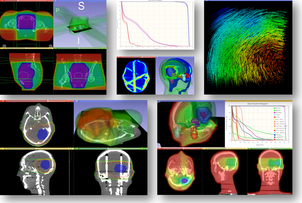
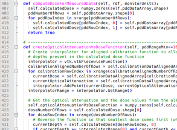

-
 Extends 3D Slicer
Extends 3D Slicer
-  Hub for RT analysis
-  Open-source
Builds on a dynamic platform
SlicerRT is an extension of 3D Slicer, a free, open source software for visualization and image analysis. SlicerRT can be installed from the 3D Slicer Extension Manager on Windows, Mac, and Linux to leverage the advanced features of 3D Slicer in radiation therapy research.
Covers common RT research workflows
SlicerRT includes close to 20 modules that provide radiation therapy specific features, including advanced deformable registration methods powered by the Plastimatch library. Standard DICOM-RT format is supported, thus integrating with the treatment planning systems. The Matlab bridge feture brings 3D Slicer and Matlab together.
SlicerRT is open research
Our development and research work is public, including source code, data, manuals, presentations, etc. SlicerRT is distributed under BSD license allowing academic and commercial use without any restrictions. See our Ohloh site for further details.